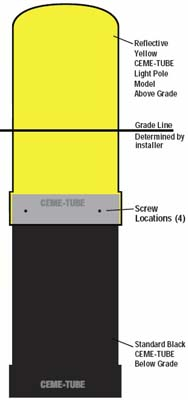

Installation Guide for 18", 24" and 30" Light
Pole Ceme-Tube™.
Note: The
Light Pole Ceme-Tube™ is a finished product, please store
Light Pole Ceme-Tube™ on end and protect them from unnecessary damage.
- Determine the exposed above grade height of the Light Pole Ceme-Tube™.
- Slide the collar end of the Light Pole Ceme-
Tube™ onto the non-collar end of the black
Standard Ceme-Tube. (If black Standard
Ceme-Tube™ is not being used, skip to step 4.)
- Fasten together
with any type of screws in
dimpled location of collar. (4 screws per
connection) .
- Place entire assembly into hole. Note: To
obtain proper height, either attach stilts to
bottom tube to rest on bottom of hole, or
attach a wooden frame around the Light Pole
Ceme-Tube™ to hang into hole. Attach
wooden support frame below the level of
final grade to avoid exposed screw holes in the finished Light Pole Ceme-Tube™.
- If backfilling, do so
evenly and/or brace
as necessary.
- Fill with concrete at your convenience.
- If necessary,
clean concrete residue off exterior of Light Pole Ceme-Tube™ with water.
- Installation is complete.
|